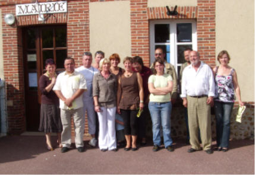
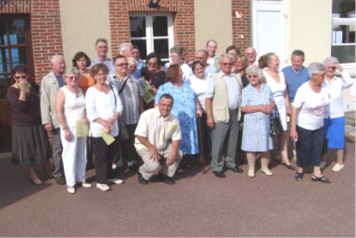

La Ferme de La Godinière
27410 Le Noyer en Ouche
dernière mise à jour de cette page : 11.10.2009
Notre ancienne adresse web :cidre.rene.lesur.club.fr est
devenue obsolète et est
transférée sur
http://pagesperso-orange.fr/lagodiniere27/
Quelques souvenirs de ces journées des
|
la recherche de témoignages... Journées du Patrimoine 2009
Mémoires de
vie à l'école communale Les 19 et 20 septembre 2009 à l'école Exposition photographique et rencontres
A l'occasion des journées du Patrimoine, les 19 et 20 septembre 2009, l'école communale du Noyer-en-Ouche rouvrira ses portes. Une exposition retraçant la vie de l'école communale du Noyer en Ouche est organisée.
Grâce à de nombreux documents écrits ou photographiques et aussi par les témoignages des anciens élèves, nous vous proposerons une rétrospective relatant le fonctionnement de cette école communale rurale depuis sa création en 1866 à sa fin en 1987.
Toutes les personnes intéressées sont cordialement invitées à participer à cette manifestation.
Nous recherchons toujours des témoignages et des documents (livres, prix de fin d'année, matériels, …) pouvant illustrer cette période. Un programme détaillé sera diffusé ultérieurement.
Vous pouvez obtenir des renseignements ou des précisions en contactant :
|
L'équipe d'organisation prévoit d'élaborer un album
souvenir dont la forme reste à définir, pour tout renseignement :
ecole.lenoyerenouche@orange.fr
Notre manifestation a été publiée :
L'Eveil Normand
Le Havre Presse
http://www.havre-presse.fr/index.php/cms/13/article/221017/Nostalgiques_de_leur_ecole ------
Paris Normandie
http://www.paris-normandie.fr/index.php/cms/13/article/221015/Nostalgiques_de_leur_ecole
Havre Libre
http://www.havre-libre.fr/index.php/cms/13/article/221016/Nostalgiques_de_leur_ecole
|  |  |
| Monsieur Muzy et ses anciens élèves | Élèves de M et Mme Larigaldie |
|
Retour
Les Produits
ou
Accueil ou
Plan du
site |
Écrivez nous pour donner votre impression et votre suggestion, merci.
Ma messagerie est protégée par Avast
Conception et Réalisation : René Lesur